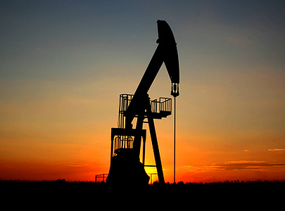
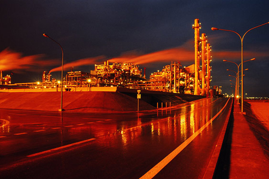
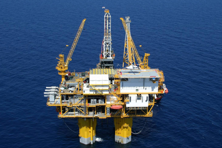

< Previous | Next >
What is Petroleum?
Petroleum (L. petroleum, from Greek πετρέλαιον, lit. "rock oil") or crude oil is a naturally occurring, flammable liquid found in rock formations in the Earth consisting of a complex mixture of hydrocarbons of various molecular weights, plus other organic compounds.
The term "petroleum" was first used in the treatise De Natura Fossilium, published in 1546 by the German mineralogist Georg Bauer, also known as Georgius Agricola.

Petroleum is basically a mix of naturally occurring organic compounds from within the earth that contain primarily hydrogen, carbon and oxygen. When petroleum comes straight out of the ground as a liquid it is called crude oil if dark and viscous, and condensate if clear and volatile. When solid it is asphalt, and when semi-solid it is tar. There is also natural gas, which can be associated with oil or found alone.
Crude oil comes in many forms. Usually it is black, but green, red or brown oils are not uncommon. Thin and volatile oils are called "light", whereas thick and viscous ones are "heavy". Light oils have an API gravity of 30 to 40 degrees, which means that the density is much less than 1.0 g/cc. These oils float easily on water. By contrast, some heavy oils have an API gravity of less than 12 degrees and are so dense that they sink, rather than float, in water.
Most oils are mixtures of many different compounds, most of which are hydrocarbons. There are four main hydrocarbon groups in petroleum. The saturates are hydrocarbons consisting of straight chains of carbon atoms. Aromatics are hydrocarbons consisting of rings of carbon. Asphlatenes are complex polycylic hydrocarbons that contain many complicated carbon rings, and NSO compounds are mostly nitrogen, sulfur, and oxygen.
In most oils, the saturate fraction is the largest and is made up of two subgroups called paraffins and isoprenoids. Paraffins are simple straight-chain hydrocarbons, whereas isoprenoids are hydrocarbon chains with branches. Waxes are long-chain paraffins that are solid at surface temperatures and may contain as many as 50 carbon atoms. Waxy oils tend to thick and viscous, whereas aromatic oils tend to be light and volatile.
Petroleum in ancient times was called bitumen, and mankind for centuries was not at all sure what bitumen was made of or where it came from. Two ideas developed in ancient times to explain the composition and origin of bitumen. One held that bitumen was inorganic and bore no relation to living things, whereas the other theorized that it somehow formed from once-living plants or animals.
Plato and Aristotle discussing philosophy. The ancient Greek philosopher Aristotle taught that everything we touch or feel is made up of the base elements of earth, air, fire and water. These elements are never found in a pure state and consist of a mysterious matrix infused with the properties of warm and dry, or the opposing properties of cold and wet. Earth was dry and cold, air wet and hot, fire dry and hot, and water wet and cold.
Aristotle believed that stones, ores and fossils form as deposits from exhalations deep within the earth that are trapped in pores and fissures. Wet exhalations produce metals, dry ones produce stones. Aristotle's followers suggested that the foul smell associated with most bitumen indicated that it was a form of liquid sulfur, a compound they attributed to dry exhalations.
Two theories on the origin of petroleum developed during the Renaissance. The more popular was proposed by Agricola, a German physician who agreed with Aristotle and wrote in 1546, in a textbook on mining and minerals, that bitumen formed from exhalations of sulfur deep within the earth. By contrast, Libavius, another German physician, theorized in 1599, in a chemistry textbook, that bitumen might form from the resins of ancient trees.
Leo Lesqueroux, the father of paleobotany, decided in 1866 that petroleum in Pennsylvania formed from marine algae in Devonian shales much the same way that coal forms from land plants. Later, Anderson and Arnold convincingly argued in a 1907 bulletin of the U.S. Geological Survey that the only possible source for oils from Santa Maria field in California was microscopic fossil plants, called diatoms, found in organic-rich shales of the Miocene Monterey Formation. Another bulletin by Clarke in 1916 demonstrated that the Santa Maria oils were chemically similar to, and therefore undoubtedly derived from, the organic remains of Monterey diatoms.
Some geologists believe that crude oil formed over millions of years from the remains of tiny aquatic plants and animals that are exposed to the combined effects of time and temperature. In other words, oil forms from organic matter that is either "cooked" deep within the earth for long periods of time at low temperatures, or "cooked" for short periods of time at high temperatures. Others believe that it is formed relatively quickly from layers upon layers of organic matter (aquatic plants, animals of other living matter) via an exothermic biological process and that it takes eons of years to accumulate the volume of oil we find in wells.

Fossil organic matter is called kerogen, and sulfur-rich kerogens form oil sooner, and at lower temperatures, than other types of organic matter. This is because atomic bonds between carbon and sulfur break much easier than carbon-oxygen bonds. Kerogen in the Monterey Formation, the main oil source rock for Kern County, was deposited in oxygen-deficient, deep-ocean waters that promoted the formation of sulfur. Thus, organic-rich Monterey shales generate oil easier than other oil source rocks. The down side is that sulfur-rich oils are more difficult to refine, and therefore not as valuable, as other oils.
Most crude oil formed from one-celled plants and animals, called plankton, which floated on the surfaces of ancient oceans. As these organisms died, they settled to the ocean floor and were covered with mud. If the mud did not contain enough oxygen for the soft parts of these organisms to decay, then the organic material was converted into kerogen. If enough kerogen remains, it may later be converted into oil.

Kerogen in the Monterey Formation is derived mainly from diatoms, which are one-celled planktonic plants with microscopic shells of silica. Thus, some organic-rich Monterey shales are also called diatomaceous shales. Other types of plankton, as well as bacteria that feed on decaying plankton, make up most of the kerogen in many of the oil source rocks that are important in other parts of the world. Diatoms and other forms of marine plankton tend to form what is called Type-II kerogen.
Some oils formed from non-marine algae and bacteria that grew in ancient lakes. Examples are some of the oils found in the Far East and Central Africa, as well as oils in the oil shales of Wyoming and Colorado. Non-marine algae and bacteria form Type-I kerogens.

The woody remains of land plants form coal, which is Type-IV kerogen, whereas the soft parts, mainly spores and pollens, form gas-prone Type-III kerogens. Thus, land plants do not form kerogens conducive to oil formation. Because the Sacramento basin of California contains source rocks with primarily of Type-III kerogens, the Sacramento Valley has many gas fields with very few oil fields.
In summary, most crude oil was formed underwater from microscopic plants and animals that accumulated over millions of years and where layers of buried organic matter created exothermic conditions that favored oil creation. Given deeper burial, with sufficient time to accumulate and exothermic insolated conditions, the soft parts of these organisms, were converted to oil which accumulated into the oil fields we find today.
< Previous | Next >